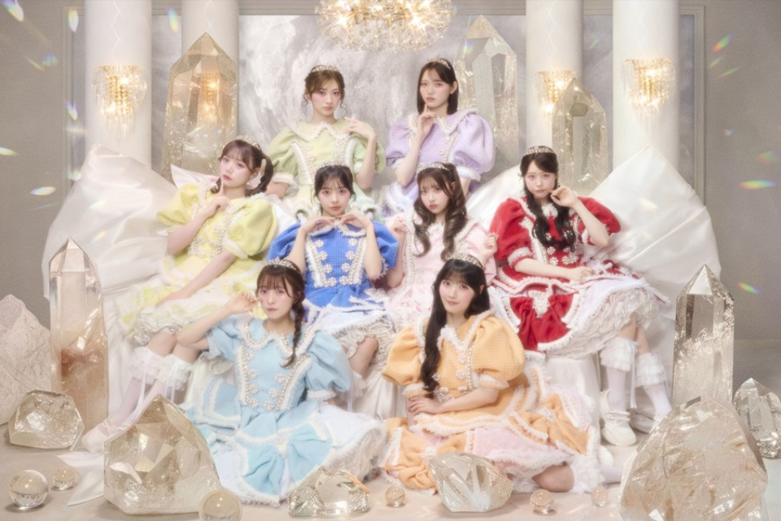

① 当該アーティスト開演45分前(ガーデンステージは30分前より、前方エリア優先入場待機エリアを開放致します。お持ちの「前方エリア優先入場券」に記載された整理番号に対応するレーン及び整理番号の記載された待機場所にてお待ちください。
② 優先入場待機エリアのレーンは整理番号毎に200番単位で別れており、各レーン入口にて「前方エリア優先入場券」を確認させていただきます。
③ 当該アーティスト開演15分前より、整理番号順に前方エリア内へと入場を開始致します。入場開始時刻までに優先入場待機エリア内の整理番号に対応した待機場所にてお待ちください。
※前方エリア優先入場券の整理番号は、1名ずつ異なる番号ではなく、10名単位のブロック番号で表示されます。
例:「10番台」「20番台」「30番台」…のように表示され、同じ整理番号が10名に表示されます。誘導の際に10人単位で誘導した方がスムーズにご入場頂ける、との現場からの提案に従い改善しました。
※ 異なる整理番号をお持ちの同行者と一緒に入場されたい場合は後ろの番号に合わせてご入場ください。
※ 各STAGE横の「前方エリア優先入場待機エリア」については後日エリアマップで案内します。
※ 入場開始時刻が近づくにつれて混雑が予想されます。お時間に余裕をもってお集まりください。
※ ご入場開始時に不在の場合でも、入場は可能です。
※ 当日の状況をみて、前方エリア優先入場券購入者が前方エリア内に入った後にスペースに余裕がある場合は、過去出演アーティストからの要望や盛況感の演出を踏まえ、前方エリア優先入場券未購入の方にも、公演開始直前に前方エリア内へ誘導しますので、予めご了承ください。